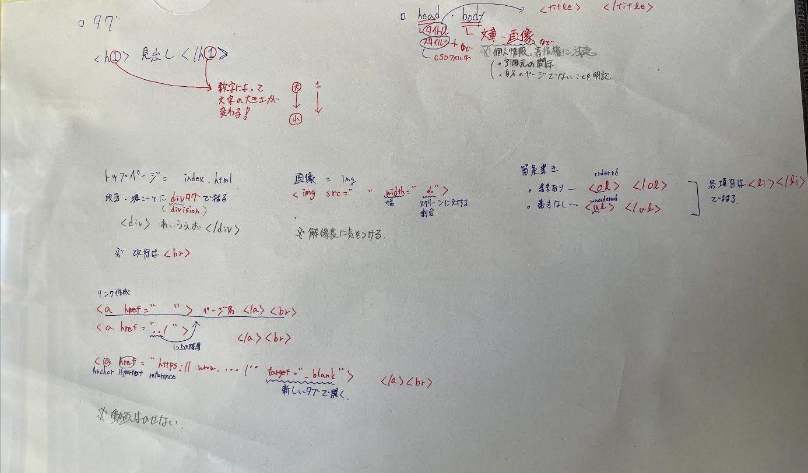

課題１
- gitに関して
gitとはプログラムのソースコードなどの変更履歴を記録・追跡するための分散型バージョン管理システムである（ウィキペディア）。
今回はHPのgit hubへの反映の仕方を学んだ。
例えばフォルダへの移動の仕方（cd ファイル名）や更新状況の確認（git status）、更新（git add .,git commit -m "メッセージ",git push）。最後の更新時の順番はadd .,commit,pushの順に行うことを覚えておくこと。
編集の際には日付や編集者を記載しておくと後から見た時にわかりやすくなる。
- htmlに関して
html(HyperText Markup Language)とは、ハイパーテキストを記述するためのマークアップ言語の1つ。略してHTML（エイチティーエムエル）と呼ばれることが多い。SGMLを元に開発された。World Wide Web（WWW）において、ウェブページ を表現するために用いられる（ウィキペディア）。
今回はhtmlの基礎を学んだ。
htmlファイルを自分で作り、webサーバーにアップロードすることによって自分のHPを作った。
理解したこと(html)

デザイン演習１・２トップページ
XBPトップページ